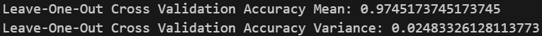
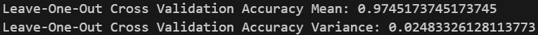

Presentazione del progetto
MotionAI è un progetto che si pone l'obiettivo di creare un sistema integrato per il monitoraggio delle attività quotidiane. Utilizzando la SensorTile.box PRO di STMicroelectronics per la raccolta dei dati e due modelli di Machine Learning (ML), uno eseguito sulla board e uno sullo smartphone. Il sistema raccoglie e analizza i dati in tempo reale, offrendo una valutazione continua delle attività motorie.
La SensorTile.box PRO è un dispositivo che integra diversi sensori, tra cui accelerometro, giroscopio e magnetometro. Questi sensori permettono di raccogliere dati relativi all'attività umana e all'ambiente circostante.
Il progetto sfrutta le potenzialità di questo dispositivo per riconoscere attività umane come stazionarietà, camminata, corsa o guida. Il sistema è stato sviluppato rispettando i principi dell'Edge Computing, ovvero il processamento dei dati direttamente sul dispositivo. Questo permette di ridurre i tempi di risposta e di rendere il riconoscimento indipendente da una connessione ad Internet.
Funzionalità
- Acquisizione dati ed elaborazione: La SensorTile.box PRO raccoglie i dati in tempo reale dall'accelerometro. I dati includono informazioni sull'accelerazione nelle tre direzioni (X,Y,Z).
-
Connessione Bluetooth Low Energy (BLE):
L'applicazione Android è in grado di stabilire una connessione Bluetooth con la board. Questo include:
- Scansione dei dispositivi Bluetooth disponibili
- Connessione alla SensorTile.box PRO
- Disconnessione dalla SensorTile.box PRO
- Caricamento del modello pre-addrestrato sulla SensorTile.box PRO: Il firmware con il modello di ML in grado di effettuare la classificazione sulle attività svolte viene caricato sulla board. Le attività da riconoscere sono: camminata, corsa, stazionarietà e guida.
- Caricamento del modello pre-addrestrato sullo smartphone: Il sistema invia i dati dalla SensorTile.box PRO allo smartphone tramite Bluetooth e lo smartphone esegue un secondo modello di ML per confermare la classificazione effettuata dalla board.
- Visualizzazione attività: Le attività classificate vengono visualizzate sull'applicazione Android in tempo reale, mostrando il tipo di attività svolta.
- Stima della durata delle attività: Il sistema è in grado di calcolare la durata giornaliera di ogni tipo di attività svolta dall'utente. È, inoltre, possibile visualizzare una stima settimanale delle attività svolte, fornendo una panoramica dell'attività fisica nel corso del tempo.
- Storico delle attività: Il sistema consente di registrare uno storico delle attività classificate con la relativa durata, memorizzando i dati delle attività passate insieme alle relative date. L'utente deve poter accedere facilmente allo storico delle attività per analizzare i cambiamenti nel tempo.
- Supporto in background: L’applicazione Android continua a raccogliere, elaborare e inviare dati anche quando non è in primo piano, garantendo la continuità del monitoraggio delle attività e il risparmio energetico.

Architettura del sistema
L'architettura del sistema è raffigurata nel diagramma seguente:
Descrizione
Il processo inizia con la raccolta dei dati provenienti dalla SensorTile.box PRO. I dati vengono acquisiti in tempo reale tramite connessione Bluetooth, stabilita grazie all’ST Blue SDK integrato nell’app mobile sviluppata in Kotlin. L’utente può visualizzare immediatamente i dati dei sensori o le attività identificate.
I dati relativi all'utente e ai riconoscimenti, vengono inviati al backend, composto da due microservizi principali:
- AuthenticationService: gestisce la registrazione, la modifica dei dati dell'utente e l’autenticazione tramite token JWT.
- PredictionService: riceve i riconoscimenti dal modello di machine learning eseguito sullo smartphone, salva i dati nel database MongoDB e fornisce funzionalità per analisi storiche e stime settimanali.
Sul lato ML, il sistema utilizza un modello Random Forest Classifier, addestrato offline su un dataset pre-elaborato, utilizzando librerie Python come scikit-learn, pandas e NumPy. Il modello fornisce previsioni sulle attività dell’utente, che vengono inviate al microservizio PredictionService per essere archiviate e analizzate.
L’utente può visualizzare le attività riconosciute e le stime di durata delle attività svolte, grazie all’applicazione Android sviluppata in Kotlin. L’applicazione offre anche la possibilità di visualizzare uno storico delle attività svolte e di accedere alle funzionalità di autenticazione.
Casi d'uso
Il diagramma dei casi d'uso è raffigurato nella figura seguente:

Registrazione Utente
L'utente deve essere in grado di registrarsi all'applicazione inserendo i propri dati personali: nome, cognome, data di nascita, email e password. Successivamente, può accedere all'applicazione inserendo le proprie credenziali.
Login Utente
L'utente può accedere all'applicazione inserendo le proprie credenziali: email e password. Se le credenziali sono corrette, l'utente viene reindirizzato alla dashboard e può visualizzare le attività riconosciute.
Modifica Utente
L'utente può modificare i propri dati personali, come nome, cognome, data di nascita, email e password. Questa funzionalità è disponibile solo dopo aver effettuato l'accesso all'applicazione.
Cancella Utente
L'utente può cancellare il proprio account dall'applicazione. Questa funzionalità è disponibile solo dopo aver effettuato l'accesso all'applicazione.
Collegamento Bluetooth SensorTile.box PRO - Smartphone
L'utente deve essere in grado di connettere la SensorTile.box PRO allo smartphone tramite Bluetooth. Questo permette di inviare i dati raccolti dalla board allo smartphone per l'elaborazione.
Visualizzazione Stima Attività e Durata giornaliera
L'utente può visualizzare delle statistiche sull'attività giornaliera e una stima settimanale delle attività svolte in confronto alla settimana precedente.
Visualizzazione Riconoscimento Smartphone
L'utente può visualizzare in tempo reale le attività riconosciute dal modello Random Forest eseguito sullo smartphone. Questi riconoscimenti vengono poi inviati al backend per essere archiviati.
Visualizzazione Riconoscimento SensorTile.box PRO
L'utente può visualizzare in tempo reale le attività riconosciute dal modello Decision Tree eseguito sulla SensorTile.box PRO.
Visualizzazione Dati Sensori
L'utente può visualizzare in tempo reale i dati misurati dai sensori accelerometro, giroscopio e magnetometro presenti nella SensorTile.box PRO.
Visualizzazione Storico Attività
L'utente può visualizzare uno storico delle attività svolte nelle giornate precedenti con la relativa durata.


Sviluppo
Il progetto è stato sviluppato utilizzando diverse tecnologie e linguaggi di programmazione. Di seguito sono elencati i principali strumenti utilizzati per lo sviluppo del sistema:
- ST Blue SDK: SDK fornito da STMicroelectronics per lo sviluppo di applicazioni Android che interagiscono con i dispositivi Bluetooth della famiglia SensorTile.box.
- Kotlin: linguaggio di programmazione utilizzato per lo sviluppo dell'applicazione Android.
- Python: linguaggio di programmazione utilizzato per l'addestramento del modello di machine learning.
- scikit-learn: libreria Python per l'apprendimento automatico.
- pandas: libreria Python per la manipolazione e l'analisi dei dati.
- NumPy: libreria Python per il calcolo scientifico.
- Java: utilizzato per lo sviluppo del backend.
- Spring Boot: framework Java per la creazione di API RESTful.
- MongoDB: database NoSQL utilizzato per la memorizzazione dei dati.
Back-end
Il backend è stato sviluppato utilizzando il framework Spring Boot. Successivamente, i due microservizi sviluppati sono stati containerizzati con Docker su delle istanze AWS EC2. Le API RESTful sono accessibili tramite AWS API Gateway. Di seguito sono elencate le principali funzionalità offerte dai microservizi:
Authentication Service - API RESTful
- POST api/v1/registration: Questa API consente la creazione di un nuovo account nel sistema.
- POST /api/v1/login: Questa API consente di effettuare l'accesso al sistema.
- PUT /api/v1/user/put: Questa API permette di modificare le informazioni dell'utente.
- DELETE /api/v1/user/delete: Questa API permette di cancellare un utente dal sistema.
- GET /api/v1/user/get: Questa API restituisce le informazioni dell'utente autenticato.
Prediction Service - API RESTful
- POST /api/v1/prediction/insert: Questa API consente di inserire all'interno del database l'attività riconosciuta con la relativa durata.
- GET /api/v1/prediction/getByEmail: Questa API restituisce tutte le predizioni che sono state inserite per uno spedcifico utente.
- GET /api/v1/prediction/estimate: Questa API fornisce una stima in percentuale di quanto l'utente ha svolto una certa attività (in più o in meno) rispetto alla settimana precedente.
- GET /api/v1/prediction/activityDuration: Questa API fornisce la durata giornaliera per ogni tipo di attività che viene svolta dall'utente. La durata è espressa in secondi.
- GET /api/v1/prediction/getAllByUser: Questa API fornisce tutte le durate delle attività svolte registrate nel corso di diverse giornate.
- DELETE /api/v1/prediction/delete: Questa API permette di cancellare tutte le attività riconosciute associate ad uno specifico utente.

Training
Il modello di machine learning è stato addestrato utilizzando un dataset pre-elaborato, il quale è stato Successivamente suddiviso in due parti: 80% di osservazioni per l'addestramento e il 20% per il test. Il modello è stato addestrato utilizzando la libreria scikit-learn di Python.
Dataset
Il dataset è stato ottenuto raggruppando i dati raccolti in finestre temporali di circa 2 secondi (60 campioni considerando la frequenza di campionamento di 30 Hz) Questo approccio permette di ottenere un'analisi accurata dei dati e di estrarre le informazioni necessarie per il riconoscimento delle attività. In particolare, le coordinate spaziali per le classi Running, Walking e Stationary sono state raccolte da STMicroelectronics e sono accessibili alla seguente repository: STMicroelectronics HAR Dataset, mentre i dati relativi alla classe Driving sono stati raccolti appositamente per il progetto.
Il modello Random Forest è stato addestrato e testato utilizzando un dataset composto da 2.590 istanze e 12 features:
- Media X: Media dei valori sull'asse X.
- Media Y: Media dei valori sull'asse Y.
- Media Z: Media dei valori sull'asse Z.
- Varianza X: Varianza dei valori sull'asse X.
- Varianza Y: Varianza dei valori sull'asse Y.
- Varianza Z: Varianza dei valori sull'asse Z.
- Peak to Peak X: Differenza tra il valore massimo e minimo sull'asse X.
- Peak to Peak Y: Differenza tra il valore massimo e minimo sull'asse Y.
- Peak to Peak Z: Differenza tra il valore massimo e minimo sull'asse Z.
- Zero Crossings X: Numero di attraversamenti dello zero sull'asse X.
- Zero Crossings Y: Numero di attraversamenti dello zero sull'asse Y.
- Zero Crossings Z: Numero di attraversamenti dello zero sull'asse Z.
Classification Report
Durante la fase di addestramento del modello, sono state valutate le prestazioni del modello di riconoscimento. In particolare, sono stati analizzati i seguenti aspetti:
- Accuracy: Percentuale di riconoscimenti corretti sul totale delle istanze. Indica la performance complessiva del modello.
- Precision: Percentuale di riconoscimenti corretti tra tutti quelli effettuati per una classe specifica. Misura quanto il modello sia affidabile quando classifica un'istanza in una determinata classe. Permette di valutare la capacità del modello di non etichettare erroneamente un'istanza come appartenente a una classe diversa.
- Recall: Percentuale di riconoscimenti corretti tra tutte le istanze effettive di una classe. Misura la capacità del modello di identificare tutte le istanze di una classe. Permette di valutare la capacità del modello di non etichettare erroneamente un'istanza come appartenente a una classe diversa.
- F1-Score: Media armonica tra Precision e Recall. Un buon bilanciamento tra queste due metriche indica una performance stabile.
- Support: Rappresenta il numero totale di istanze effettive (vere) presenti in ciascuna classe nel dataset di test.
Dalla tabella si può notare che il modello Random Forest dimostra un'ottima capacità di riconoscere le diverse attività, con valori di precision, recall e F1-score molto vicini al 100\% per tutte le classi. La classe "Stationary" mostra una leggera diminuzione nel fattore di Recall, mentre "Walking" ha una leggera diminuzione di precision. Tuttavia, queste differenze non influiscono molto sulla qualità generale del modello.
Confusion Matrix
Dalla matrice si osserva che il modello Random Forest si comporta in maniera eccellente, con la maggior parte delle classificazioni corrette collocate lungo la diagonale principale. In particolare:
- La classe Driving è classificata quasi perfettamente, con solo un'istanza riconosciuta erroneamente come "Walking".
- La classe Running mostra prestazioni impeccabili, con una classificazione corretta al 100%.
- La classe Stationary ha un'alta accuratezza, sebbene si notino alcuni errori: un'istanza è stata identificata come "Driving" e quattro come "Walking".
- La classe Walking ha lievi problemi di classificazione, con alcune istanze confuse con la classe "Stationary", ma mantiene comunque un elevato livello di precision e recall.
Cross Validation
Per valutare le prestazioni del modello Random Forest, è stata utilizzata la tecnica di Cross Validation. Questa tecnica permette di suddividere il dataset in k parti, addestrare il modello su k-1 parti e testarlo sulla parte rimanente. Questo processo viene ripetuto k volte, in modo che ogni parte del dataset venga utilizzata almeno una volta come set di test. Questa tecnica permette di ottenere una stima più accurata delle prestazioni del modello, riducendo il rischio di overfitting e fornendo una valutazione più affidabile della sua capacità di generalizzazione.
In particolare è stata utilizzata la tecnica Leave One Out Cross Validation (LOOCV), in cui il dataset viene suddiviso in k parti, con k uguale al numero di istanze presenti nel dataset. Questa tecnica è particolarmente utile quando si dispone di un numero limitato di istanze, poiché permette di utilizzare al meglio i dati disponibili per l'addestramento e la validazione del modello.
Si osserva che, con la tecnica LOOCV, il modello Random Forest ha ottenuto un'accuracy del 97.45% con una varianza pari circa a 0.0248, confermando l'efficacia del modello nel riconoscere le diverse attività. Questi risultati confermano la validità del modello Random Forest e la sua capacità di generalizzare correttamente le attività riconosciute.
 

Front-end
L'applicazione Android è stata sviluppata utilizzando il linguaggio di programmazione Kotlin. L'applicazione offre diverse funzionalità per l'utente, tra cui la registrazione, l'accesso, la modifica e la cancellazione dell'account. Inoltre, l'utente può connettersi alla SensorTile.box PRO tramite Bluetooth per visualizzare le attività riconosciute, la stima della durata delle attività svolte e uno storico delle attività svolte nelle giornate precedenti. Infine, può visualizzare i dati dei sensori accelerometro, giroscopio e magnetometro presenti nella SensorTile.box PRO.
In particolare, tutte le interazioni con la SensorTile.box PRO sono state possibili grazie all'SDK ST Blue SDK di STMicroelectronics che ha permesso la piena compatibilità tra la board e l'applicazione Android. Questo SDK fornisce le funzionalità necessarie per la connessione Bluetooth e la ricezione dei dati dai sensori.